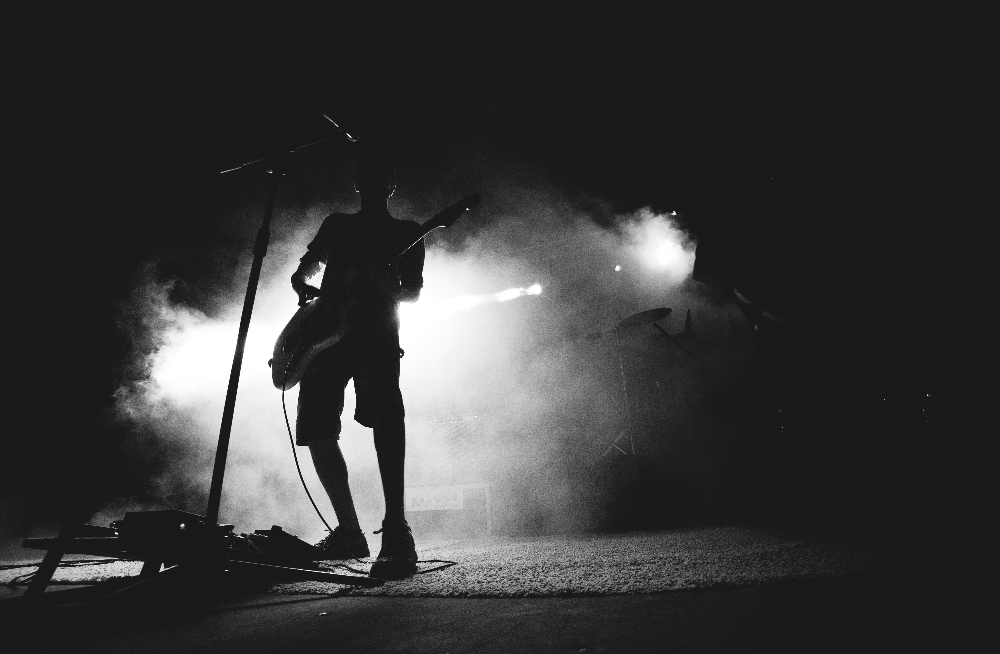

'국카스텐(Guckkasten)'은 '중국식 만화경'을 뜻하는 독일 고어이다. 풀이를 해보면 'Guck'(보다) + 'kasten'(상자)이며, 직역하면 들여다보는 상자이다. 나무상자 안을 들여다봤을 때 화려한 이미지가 펼쳐지는 만화경처럼 음악을 통해 사이키델릭한 사운드와 이미지를 표현해내겠다는 뜻으로 국카스텐이라는 이름을 택했다고 한다.
음악적 측면에서는, 현 국내 인디밴드들의 주류 음악이 듣기 편하고 복잡한 테크닉을 필요로 하지 않는 모던 록 혹은 어쿠스틱 계통임에도 불구하고 그것과는 정반대인 행보와 스타일로 인해 독보적인 색깔을 지니고 있는 밴드이다. 찢어질 듯이 까랑까랑하게 내뱉는 보컬 하현우의 고음과 미친 듯한 기타 속주는 모던록이 지배적인 한국에서 찾을 수 없는 스타일이다. 지향하는 음악은 사이키델릭 록을 지향한다고 밝히고 있는데, 사실 앨범을 들어보면 정통 사이키델릭 록이라기보다는 사이키델릭 록 + 헤비메탈 + 얼터너티브 록 혹은 프로그레시브 록에 가깝다. 기본적으로는 하드 록이나 헤비메탈의 폭발적인 구조를 깔고 거기에 이펙터와 테크니컬 한 속주를 이용해 사이키델릭한 사운드를 더하는 식의 곡들이 많은데, 어떨 땐 사악하고 주술적인 느낌을 주면서도 또 어떨 땐 묘하게 뽕끼 스타일스러운 느낌을 주는 등 굉장히 이질적이면서 독특한, 그러면서 다채로운 음악 스타일을 가지고 있다.